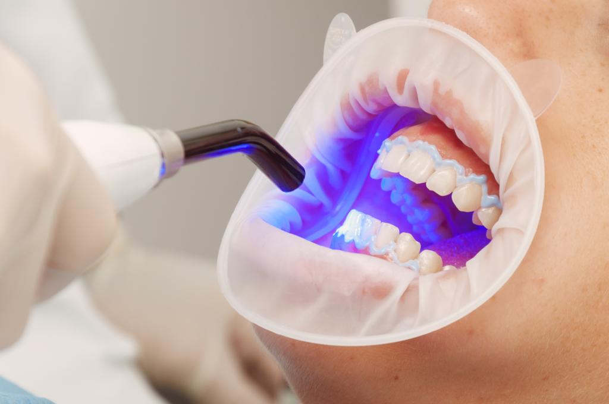

Blanqueamiento
El blanqueamiento dental puede realizarse a un conjunto de dientes comprometidos estéticamente ó bien a un sólo diente que pueda haberse oscurecido tras una endodoncia ó trauma dental.
Así pues el blanqueamiento dental puede ser:
Si se trata de un diente endodonciado se recurre a la técnica del blanqueamiento interno, que puede complementarse a su vez con las técnicas de blanqueamiento externo. Al ser una técnica usadas puntualmente no la desarrollaremos, si está interesado en ella contacte con nosotros y gustosamente le daremos más información.
Las técnicas actuales de blanqueamiento se basan en la utilización de dos productos:

TECNICAS DE BLANQUEAMIENTO
Según donde se realice el blanqueamiento se denominará:
El blanqueamiento en casa simple es aquél que el paciente realiza con los medios a su alcance y sin supervisión profesional mediante productos que pueda adquirir como barnices, colutorios, pastas, etc. Tienen un efecto limitado en el mejor de los casos. En muchos casos el paciente invierte el dinero en pastas o enjuagues, que compra en la farmacia, que quitan manchas pero que no son auténticamente blanqueadores. A continuación tratamos del blanqueamiento en casa, en domicilio bajo supervisión del profesional. Se toman unos moldes de la boca del paciente y se confeccionan en laboratorio unas férulas (estructura plástica flexible) que se amoldan a la forma de los dientes. Una para los dientes superiores y otra para los dientes inferiores. Son transparentes, no molestan en absoluto y se puede hablar con ellas puestas. Se entregan al paciente las dos férulas y un Kit de blanqueamiento que contiene jeringas con el producto blanqueador. Es conveniente conservarlo en nevera. Cada noche y durante 20-30 días (el tiempo dependerá del producto y concentración del mismo), tras el cepillado de dientes se deposita una pequeña cantidad en la férula, a la altura de cada uno de los dientes a blanquear, y se pone en boca. A la mañana siguiente se retiran las férulas de boca y se limpian con agua fría para eliminar los restos de producto ya inactivos (la actividad del producto en boca es de unas tres horas). Es normal notar cierta sensibilidad al frío al enjuagarse los dientes. Transcurrida una semana el paciente acudirá a la consulta para evaluar el color obtenido. Veremos la evolución y aconsejaremos consecuentemente. Lo normal es hacer una revisión por semana.
Todo el tratamiento dura 1 hora aproximadamente! (si se realiza con lámparas de arcada completa que activan el producto en todos los dientes a blanquear al mismo tiempo!!!), con tres ó cuatro breves pausas para renovar el producto blanqueador que depositamos en los dientes. Hay productos que se activan por una luz halógena de arco de plasma que activa simultáneamente todos los dientes a tratar. Otros se activan con lámpara de diodos. Todo dependerá del fotoiniciador que lleve el producto. En cualquier caso los blanqueamientos mediante aplicación de una fuente de luz son los más convenientes para disfrutar rápidamente de los resultados de un blanqueamiento dental. Si para la activación del gel blanqueador se utilizan métodos convencionales mediante lámparas de mano que iluminan el diente uno a uno el proceso se alarga bastante más tiempo pues debe realizarse diente a diente, renovar el producto y volverlo a aplicar varias veces hasta un total de 5 minutos por diente. El procedimiento suele ser tedioso tanto para el paciente como para el operador.
Aquellos procedimientos que combinan sesiones en clínica con el blanqueamiento domiciliario. Suelen consistir en una ó dos sesiones clínicas para proseguir el resto del tratamiento en domicilio durante un breve período de tiempo. Tienen la ventaja respecto al ambulatorio puro de que el paciente en la primera sesión puede ver ya blanqueamiento en los dientes tratados.
Ir al Home